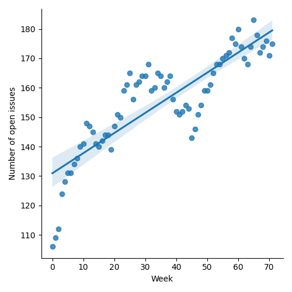
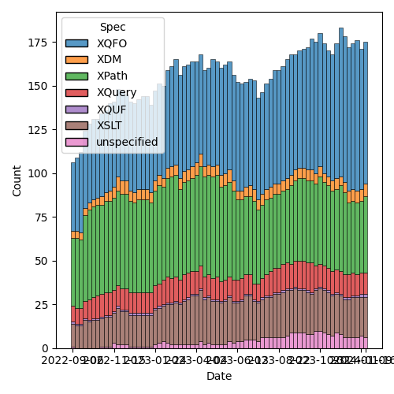
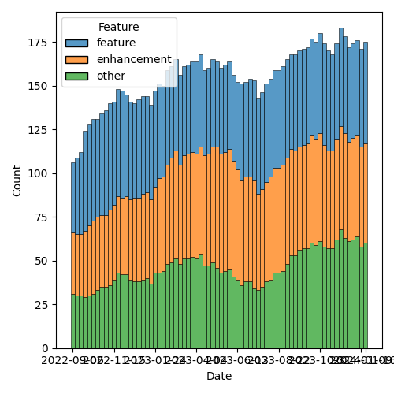

QT4 CG Meeting 062 Minutes 2024-01-23
Table of Contents
Meeting index / QT4CG.org / Dashboard / GH Issues / GH Pull Requests
Minutes
Approved at meeting 063 on 30 January 2024
Summary of new and continuing actions [0/7]
[ ]QT4CG-052-02: NW to consider how to schedule an “editor’s meeting”[ ]QT4CG-056-04: MK to write a proposal for adding a select attribute to xsl:text[ ]QT4CG-058-02: MK to consider providing more advice about the pitfalls of mixing decimal and double when sorting[ ]QT4CG-061-01: MK to review the comments CG made on the PR #927.[ ]QT4CG-062-01: CG to make an email proposal of a list of functions (re issue #843) to add[ ]QT4CG-062-02: MK to check that the expansion of subsequence gives the correct result when neither from nor to match (INF - INF)[ ]QT4CG-062-03: JK to revise the fn:hash function along the lines discussed at the meeting
1. Administrivia
1.1. Roll call [10/12]
Regrets: MSM, SF.
[X]Reece Dunn (RD)[ ]Sasha Firsov (SF)[X]Christian Grün (CG)[X]Joel Kalvesmaki (JK)[X]Michael Kay (MK)[X]Juri Leino (JLO)[X]John Lumley (JLY)[X]Dimitre Novatchev (DN)[X]Wendell Piez (WP)[X]Ed Porter (EP)[ ]C. M. Sperberg-McQueen (MSM)[X]Norm Tovey-Walsh (NW). Scribe. Chair.
Welcome, Juri!
1.2. Accept the agenda
Proposal: Accept the agenda.
Accepted.
1.2.1. Status so far…

Figure 1: “Burn down” chart on open issues

Figure 2: Open issues by specification

Figure 3: Open issues by type
1.3. Approve minutes of the previous meeting
Proposal: Accept the minutes of the previous meeting.
Accepted.
1.4. Next meeting
The next meeting is scheduled for Tuesday, 30 January 2024.
Any regrets for the next meeting? MSM.
1.5. Review of open action items [0/4]
[ ]QT4CG-052-02: NW to consider how to schedule an “editor’s meeting”[ ]QT4CG-056-04: MK to write a proposal for adding a select attribute to xsl:text[ ]QT4CG-058-02: MK to consider providing more advice about the pitfalls of mixing decimal and double when sorting[ ]QT4CG-061-01: MK to review the comments CG made on the PR #927.
1.6. Review of open pull requests and issues
1.6.1. Blocked
1.6.2. Merge without discussion
The following PRs are editorial, small, or otherwise appeared to be uncontroversial when the agenda was prepared. The chairs propose that these can be merged without discussion. If you think discussion is necessary, please say so.
- PR #958: 951 Parameters with default values: fn:lang, fn:id, fn:idref, fn:element-id
- MK asks for a quick discussion of the rationale.
- CG attempts to explain. The PR is an attempt to resolve some special
cases. In
fn:langfor example, we can’t determine statically if the function is context dependent. - PR #952: 945 module import contradiction
- PR #950: Minor edits (examples, rules)
- PR #941: 939 Remove fn:numeric-compare
- PR #936: 877 revised rules for op:binary-less-than
- PR #927: 861 Rewrite spec of deep lookup operator
Proposal: merge without discussion
Accepted.
1.6.3. Close without action
2. Technical Agenda
2.1. Issue #843: Standard, array & map functions: Equivalencies
Christian Gruen proposed putting a discussion of issue 843 on today’s agenda as a supplement to further discussion of issue 872. I’m going to suggest we time box that to about 15 minutes unless we feel like we’re making very substantial progress. He also proposed a list of PRs for discussion this week which I’ve included below.
- CG: Not one of the most exciting issues, but it’s about consistency. The issue lists all of the functions that are currently part of the specification. The question is, do we need array and map versions recently added functions?
- JLO: observes that these functions are not all exactly comparable.
- DN: What is the question, exactly? We’ve done this before. We should instead be trying to find a common collection type. We could avoid all these tables and the possibility of adding new columns. Automatically making array versions of sequence functions seems not very logical.
- CG: The difference is that ideally, I only want to spend a few minutes on this summary and then not discuss it again. Finding a common collection type would be an interesting approach, but here we have some things we can do quickly.
- DN: This isn’t going to be the best approach.
- MK: If someone has a proposal for a collection type, worked out in detail, I look forward to reading it. In the meantime, it makes sense to try to make the case more uniform.
- NW: Should someone just take an action to make a proposal?
- RD: Sequences are a flat representation of items, arrays can contain
nested arrays, and maps have key/value pairs and the value can be an
sequence or an array. How would something like
array:someorarray:everyeven work? - CG: I completely agree with RD. It would be nice to go through the list.
- WP: I think there’s a bit of a stress between long term goals and
shorter-term goals. Some of DN’s concerns might be addressed by
agreeing that the longer term goal is some sort of uniformity.
- … If we’re publishing this table, what message does that send?
- JLY: It strikes me that there are some of these that can be created
from some and every expression over things like filters and
selectors. For example
fn:duplicate-memberscould be done that way. Which do you have to have, that can’t be easily constructed from existing functions. - MK: Procedurally, I think our time is much better spent discussing concrete proposals. It’s hard to get agreement on policy questions; we should encourage people to make concrete proposals.
- JLO: I wonder if we could at least for the new functions already and make it work for the new functions?
- DN: I totally agree with MK that we need a constructive approach. I
think that
array:every,array:some, etc. should be added so that it doesn’t appear that we’re favoring sequences. - RD: One of the challenges with creating a unified function even with the existing data types is that an array is an item. So it’s hard to distinguish them.
ACTION QT4CG-062-01: CG to make an email proposal of a list of functions (re issue #843) to add
2.2. PRs #940 and #874: 878 Add subsequence-where function
- MK introduces #940 as a replacement of his previous proposal to extend subsequence.
- MK: The PR gets rid of the quartet of functions and replaces them
with
subequence-wherethat’s inclusive.- … MK explains the semantics of the function
- … It’s defined in terms of
fn:index-where - … Being inclusive at both end points makes a few use cases more difficult.
- … It’s inclusive because it’s easier to get rid of an item than add one
- … The only tricky case I’ve found is that it’s hard to tell if the last item was selected (as opposed to stopping at an item before the last).
- JLY: In most cases, you can get to an exclusive result with head/tail.
- MK: That use case inspired me to add a while close to for expressions that handles that case quite well.
- DN: The use of
INFin the description concerns me. - MK: The
subsequencefunction handlesINFso its fine.
Proposal: accept #940, discard #878
Accepted.
Some discussion of subtraction of INF values.
ACTION QT4CG-062-02: MK to check that the expansion of subsequence gives the correct result when neither from nor to match (INF - INF)
2.3. PR #937: 779 hash function
See PR #937
- JK introduces the proposed
hashfunction. - JK: The input is turned into a sequence of octets and fed to the algorithm
- … There were comments about providing a salt function, but I was hoping to start with a basic building block.
- … Two of the three algorithms have been cracked; caveat user.
- RD: Should the algorithm names be matched in a case-insensitive
manner. I note that
sha-1is lower case in one of my examples. - JK: Yes, that’s in the spec.
- MK: Another minor point, the conversion from an octet sequence to a string is under-specified. It should say that it does it as if using the hexbinary to string cast.
- DN: I this proposal a lot, what strikes me is that there are just three algorithms. I’d like to have more or make the list open-ended.
- JK: Benito asked why we don’t have a hash function library, I don’t have an opinion on that.
- MK: Why are we returning a string rather than a binary value?
- JK: That’s what most people expect.
Some discussion of what kind of string representation might be wanted.
- NW: I think it should have an options algorithm.
- MK: Have a single required option
- JK: Replace the second argument with a map.
- JLO: I like the idea of an options map. The options map could also
specify the desired output format.
- … I would like to have a core function.
- RD: On the question of implementing it in a library, the hash algorithms mutate the values so it’s hard to do in an XQuery or XSLT function.
- MK: I think the question of what module and namespace this function goes in and whether it can be implemented in XQuery are completely orthogonal.
Some discussion of whether or not this should be an independent module.
- MK: What about the name of the function? Is
fn:hashthe right name? - JK: It’s always a mystery to me where the dividing line is between hash and checksum.
Proposal: Accepted this PR
Accepted.
ACTION QT4CG-062-03: JK to revise the fn:hash function along the lines discussed at the meeting
2.4. PR #962: 946 fn:iterate-while → fn:while-do, fn:do-until
See PR #962
CG introduces the rational for creating while-do and do-until
instead of iterate-while. It allows the user to check before or
after the condition. This provides a broader set of semantics.
CG shows how do-until makes some use cases easier because the
iteration always happens at least once.
- DN: I think
do-untilis something that would be very handy. I thinkwhile-doshould be renamed to justwhile. - CG: I thought of that. But we are considering a
whileclause on a FLOWR expression and that could lead to ambiguity if the beginning of the FLOWR clause is omitted. - MK: Choosing names that we might want to use as language keywords seems unwise.
- DN: We want to avoid specifying order and ordering in functional programming as much as possible.
- MK: Yes, but we also want names that are intuitive to users. I like the symmetry.
- CG: There really is an order here.
Some discussion of the order of the arguments to the two functions.
- RD: Would it be clearer if
$seqin the first example was$value. - JL: If
$pis the position, that would be better. - MK: Or
$index - JLO: I thought we could rename them to apply-until, but I don’t know if that’s any better. But do-while is well known.
Accept this PR.
Accepted.
2.5. PR #956: 850-partial Editorial improvements to parse-html()
See PR #956
Some discussion of the semantics. RD suggests that the way that the HTML version and type work have changed but the names haven’t been changed in the record type.
MK proposes to look at it again, encourages RD to make his comments on the PR.
3. Any other business
None heard.